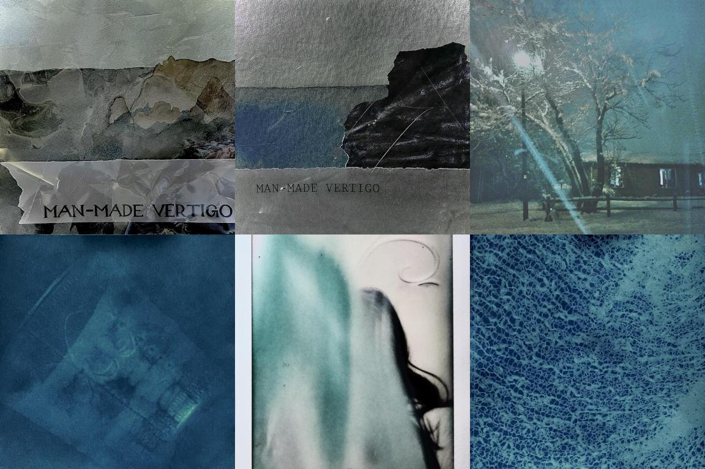
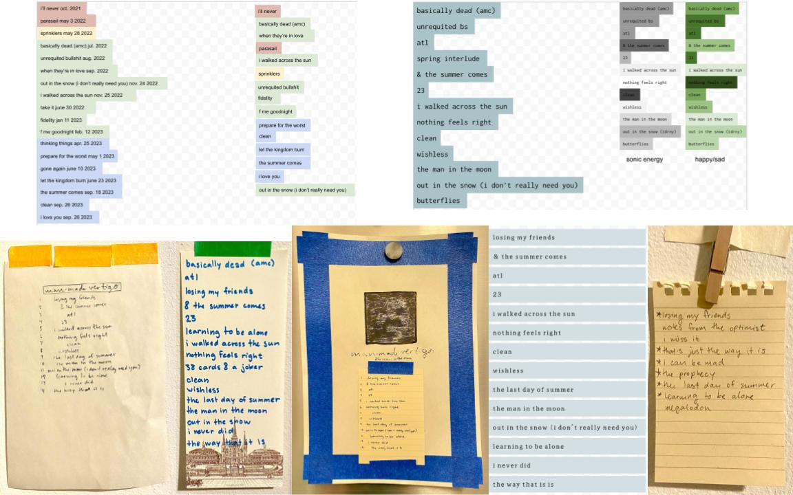
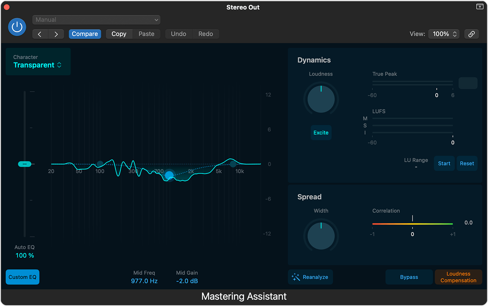

This album is a passion project that started in 2023 when I set out to release it in 200 days, though it ended up taking much longer. Having written songs for a while, I wanted to challenge myself to create a polished project for public streaming platforms. The album blends singer/songwriter with elements of folk and pop. I wrote, recorded, produced, and mixed every song, allowing the project to evolve like a traveling journal, documenting my emotions and experiences. Throughout the process, I have learned a lot about songwriting, production, and mixing music for release. Now, a year and a half later, the album will soon be available on all streaming platforms.

#MakingAnAlbumIn200Days is my TikTok series documenting the process.
When I came up with the idea for this project, I thought a lot about how important social media is for the success of any personal project. I knew I would need to be active on social media if I wanted my album to reach a wider audience beyond just my close friends.
On December 11th of 2023, I started the series 'Making an Album in 200 Days' and began posting every few days about the progress of the album. I shared details about the recording process, my songwriting journey, and short demos of some of the songs. Seeing comments like “Gonna follow you to see you succeed :)” and random people wishing me luck was really encouraging from the start. As the project went on, I ended up posting most about delaying the album and struggling with the timeline, which became the real challenge.
I originally projected the album to be released on June 28th of 2024, but after encountering several roadblocks, I had to push the release back to April 2025. I learned that I am really dedicated to making my final piece as perfect as it can be. I’m proud to say I’ve stuck to that commitment.
I spent hours working on drafts of the album cover, slowly determining the aesthetic.
The aesthetic of the album and my artist branding are really important to me. I judge books by their covers, so I understand how crucial it is to have an appealing brand, especially in today's social media-driven world where artists like Sabrina Carpenter have defined their brand so strongly that it contributes to their success. I’ve always been drawn to a dark, sailing aesthetic, like an old, sad man lost at sea with sirens, lighthouses, and albatrosses.
Most of the songs on the album were written before I started the project. However, I wrote 'The Man in the Moon,' after I started, which I chose as my artist name.
I also enjoyed creating drafts for the album cover using watercolor, Polaroids, and photography. This process felt almost like a separate project from the music itself. It was exciting to see a physical representation of the project as it evolved, watching the songs and tracklist come together into something more concrete.
There were many drafts of the tracklist. With so much time, I changed my mind a lot.
I started the album project with an initial tracklist of songs I had already written, which formed a cohesive story I wanted to tell. These songs were like chronological journal entries before, during, and immediately after my first real relationship.
The feel of the songs shifted as my emotions did, so this layout made sense. However, during the TikTok 'challenge,' I worked through more emotions and wrote additional songs that felt more important to include in the final album. As a result, I adapted the tracklist to feature these more urgent songs and removed some of the ones I felt were less necessary.
I used the mastering assistant built into Logic Pro X, where I recorded all my songs.
The mastering process, which prepares a track for official release, has only recently begun as I’ve finalized some recordings. I taught myself how to master through YouTube videos and articles, and it feels rewarding to officially seal up a song, committing it to release. Currently, two out of the 14 tracks are mastered, with the rest to follow soon. I plan to finalize all the songs by June of this year, with a release scheduled for June or July 2025. This project has been really fun for me, and through it, I’ve learned a lot about my work ethic and determination.